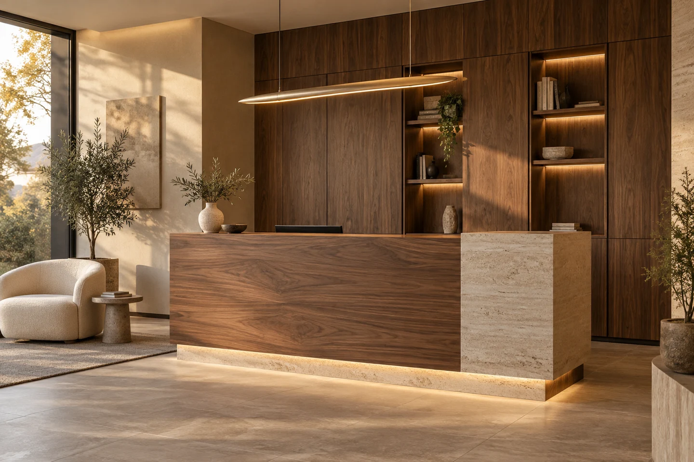

Co pro vás můžeme vytvořit
Pro každý prostor.
Přesně pro vás.
Od kuchyně až po poslední polici. Objevte možnosti zakázkové výroby pro váš domov, kancelář nebo provozovnu.
 01 /Objevte možnosti pro váš prostor
01 /Objevte možnosti pro váš prostorKuchyně na míru
 02 /Objevte možnosti pro váš prostor
02 /Objevte možnosti pro váš prostorVestavěné skříně
 03 /Objevte možnosti pro váš prostor
03 /Objevte možnosti pro váš prostorObývací pokoje
 04 /Objevte možnosti pro váš prostor
04 /Objevte možnosti pro váš prostorKoupelnový nábytek
 05 /Objevte možnosti pro váš prostor
05 /Objevte možnosti pro váš prostorLožnice na míru

06 /Objevte možnosti pro váš prostorKomerční interiéry
Další možnosti
Každé místo
má svůj potenciál.
Šatny na míru
Když má každá věc své místo, den začíná o trochu lépe. Navrhneme šatnu podle vašeho prostoru i šatníku.
Nábytek na míru
Jedna komoda, nebo vybavení celého interiéru. Každý kus může mít přesné místo, účel a vlastní charakter.
Předsíňový nábytek
První prostor, do kterého vstupujete. A poslední místo, kde ráno hledáte klíče. Udělejme ho příjemné a praktické.
Dětské pokoje
Místo pro hraní, učení i odpočinek. Promyšlené uspořádání, které počítá s tím, že děti rostou.
Kancelářský nábytek
Praktická pracovní plocha, přehledné ukládání a technika na svém místě. Pro firemní kancelář i domácí pracovnu.
Dveře na míru
Proporce, materiál a přesné zpracování. Dveře, které přirozeně patří k architektuře vašeho interiéru.
Atypický nábytek
Šikmina, výklenek nebo nápad, pro který hotový výrobek neexistuje. Najdeme řešení pro konkrétní místo.
Rekonstrukce interiérů
Když měníte interiér, každý detail souvisí s dalším. Navrhneme a vyrobíme jeho truhlářskou část v jasných souvislostech.
Od návrhu po montáž
Jeden partner.
Celá cesta k vašemu interiéru.
- 01
Probereme představu
Prostor, potřeby, materiály i rozpočet.
- 02
Doladíme návrh
Přesné rozměry, detaily a cenová nabídka.
- 03
Vyrobíme na míru
Zakázkové zpracování podle odsouhlaseného řešení.
- 04
Přivezeme a namontujeme
Pečlivé sestavení a společné předání.